Big goals need better systems.
Blocke designs, modernizes, and delivers software for organizations aiming beyond incremental change.

Blocke designs, modernizes, and delivers software for organizations aiming beyond incremental change.
Modernization
Not every legacy system should be replaced. We identify what to preserve, what to refactor, and what to retire so momentum stays real.
Blocke helps teams rethink system boundaries, platform capabilities, and integration patterns before complexity hardens into policy, then carries that work into practical delivery.
AI Right-Sizing
AI can accelerate work, but only when it fits the team and the problem. We help organizations adopt it with boundaries, review discipline, and measurable value.
Better tools raise the premium on code quality, maintainability, and human judgment. The goal is not maximal automation. The goal is better software.
About Blocke
We believe software is about craftsmanship, which is even more important today in the age of AI. Good software work comes from judgment, experience, sequencing, and steady execution.
Proudly a remote-first company, headquartered in the Dallas metroplex, Blocke brings flexible collaboration without sacrificing accountability, responsiveness, or rigor.